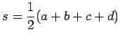

Ein Viereck, das von einem Umkreis umbeschrieben werden kann, heißt Sehnenviereck, weil die Seiten dieses Vierecks Sehnen des Umkreises sind. Ein Sehnenviereck liegt dann und nur dann vor, wenn die Summe zweier Gegenwinkel  beträgt:
beträgt:
Der Umkreisradius des Sehnenvierecks beträgt
| (3.40) |
Die Diagonalen berechnen sich gemäß
| (3.41a) | |||
| (3.41b) |
Für das Sehnenviereck gilt der Satz des PTOLEMÄUS:
| (3.42) |
Mit dem halben Umfang des Sehnenvierecks  berechnet sich sein Flächeninhalt gemäß
| (3.43) |
Ist das Sehnenviereck gleichzeitig ein Tangentenviereck, dann gilt
 |
(3.44) |